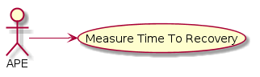
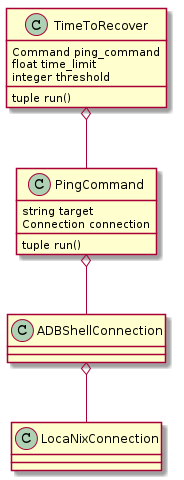

Main Path¶
- DUT pings TPC
- If ping and is first ping, set first ping time.
- If ping increment ping count
- If not ping, set first ping time to none and ping count to 0.
- If ping count matches threshold, return the time to the first ping.
- Go to step 1.
![(*) --> "Ping Target"
if "" then
--> "Set First Ping Time To None" as reset_time
else
if "pinged" then
--> [first ping] "Set First Ping Time"
else
--> "Increment Ping Count"
endif
endif
reset_time --> "Set Ping Count To 0"
"Set Ping Count To 0" --> "Ping Target"
"Set First Ping Time" --> "Increment Ping Count"
if "" then
--> [threshold met | time limit reached] (*)
else
--> "Ping Target"](../../../../_images/plantuml-205130e231fb30bae08edcb83efb4426dc8d5154.png)
The system impels the Device Under Test (DUT) to ping the Traffic PC (TPC) until it succeeds, recording the time of the first success.


Time to first ping is returned calculated.